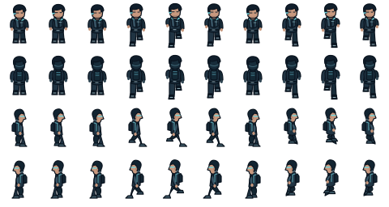

Dark field suit · cyan comms accent · compact human silhouetteTwo idle poses + eight walking frames per facing. Feet stay anchored across frames.
Rows: front, back, right, left. 48 × 64 cells. Game renders at 80%.

Open transparent sprite sheet